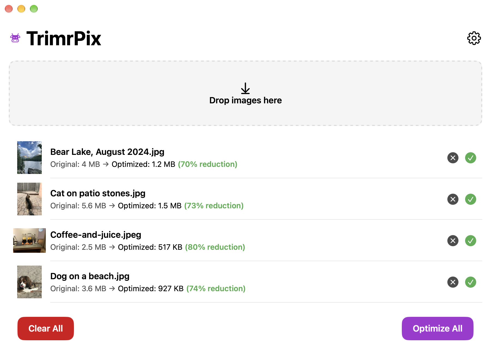
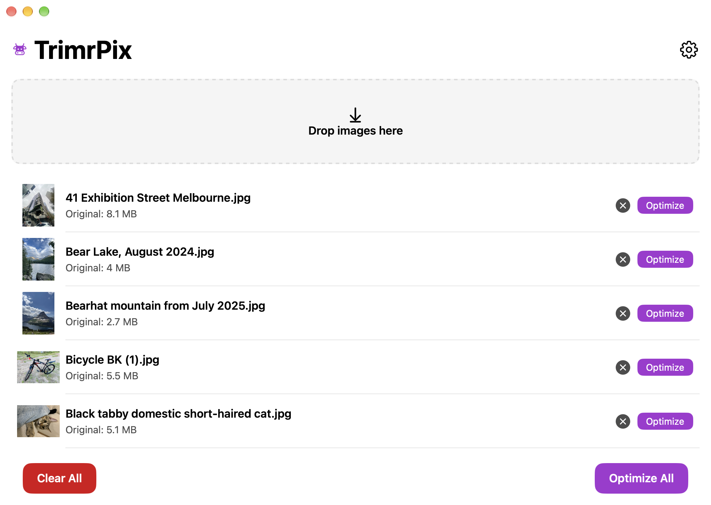
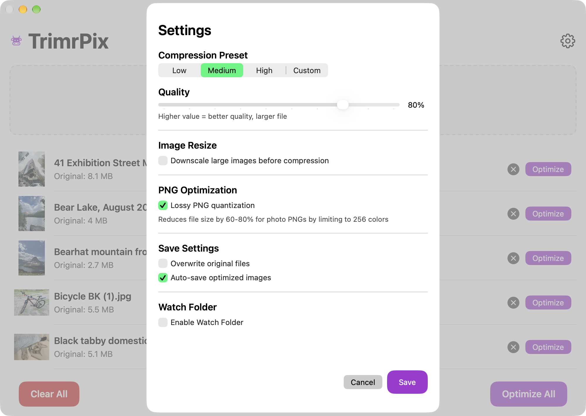

Trim file size. Keep quality.
Shrink image file sizes on your Mac without visible quality loss. Drag, drop, optimize, and save space. Fast, private, and fully offline.
$1.99 once · macOS 15.2 or later

One photo, two sizes.
- 6.6 MB → 1.7 MB −74%
- 4032 × 3024 → 2048 × 1536
- Medium, 80%
Drop them in. Watch them shrink.


One or a few hundred
Drop in single images or whole folders. Each shows its size before and after, and how much it saved, as it goes.
Quality, your call
Low, Medium or High, or a slider from 10 to 100 %. Medium is the default.
Watch Folder
Point it at the folder your screenshots or exports land in. Every new image gets a smaller copy beside it, without opening the window. It waits until a file has finished copying.
The formats you use
JPEG, PNG, GIF, AVIF and HEIC, and PDFs that are images rather than text, such as scans. WebP files are left as they are: macOS has no way to write them.
Where it works.
−79%
30 iPhone photos (CC0, Wikimedia Commons), resized to 2048 px, at Medium: 160 MB → 34 MB, measured with TrimrPix 1.7.2.
JPEG, PNG, GIF, AVIF, HEIC
The formats you have.
PDFs that are images
Scans and other image-only PDFs, page by page.
Watch Folder, metadata, resize
Trim what lands in a folder, strip EXIF, GPS and IPTC, and resize before compressing.
Offline
Nothing leaves your Mac.
Nothing uploaded. Paid for once.
Your images stay yours
They are compressed on your Mac and never uploaded. No account, nothing to sign in to.
Paid for once
One purchase on the Mac App Store. No subscription, no in-app purchases.
Data Not Collected
The Mac App Store’s privacy label, as Apple shows it: “The developer does not collect any data from this app.”
I built TrimrPix to do one thing well. It makes your image files smaller without making them look worse, it runs on your Mac, and it uploads nothing. You pay for it once.
Jarl
Guides and comparisons.
ImageOptim alternative
How the two compare, and where ImageOptim is the better choice.
JPEG, PNG, WebP, AVIF or HEIC?
Which format to use for what.
Compress images for the web
Smaller pages without visibly worse images.
Batch compression on Mac
Hundreds of images in one go, or a folder that does it for you.
App Store images
Screenshots and assets that pass review and load fast.
Remove EXIF data
What photos carry about you, and how to take it out.
Questions.
Which formats does TrimrPix work with?
JPEG, PNG, GIF, AVIF and HEIC, plus PDFs that are images rather than text, such as scans. WebP files are skipped with a message and left as they were, because macOS has no WebP encoder.
Can it compress PDFs?
Yes, when the PDF is made of images rather than text, as a scan is: each page is re-encoded at the quality you choose. PDFs with selectable text are left alone on purpose, because turning them into images would remove the text and usually make the file bigger, and TrimrPix tells you when it skips one. A PDF whose text was turned into outlines, as some design tools export it, has no text layer either. It is treated like a scan, so it gets smaller, but its text comes out slightly softer.
How does Watch Folder work?
You choose a folder and turn Watch Folder on. When a new image or image PDF lands there, TrimrPix waits until the file has finished copying, optimizes it, and saves the smaller copy beside it. The wait is 2 seconds by default and can be set from 0.5 to 10. It ignores its own output, and it is off until you turn it on.
What happens to my originals?
They are kept. The smaller version is saved next to the original with “-optimized” added to its name, so you can compare them. If you would rather replace the originals, turn on “Overwrite original files” in Settings; it is off by default. If compressing would make a file bigger, TrimrPix keeps the original bytes.
How much smaller will my images get?
It depends on the image and on the size you need. Our sample, 30 iPhone photos (CC0, Wikimedia Commons) at Medium, came out 79 % smaller resized to 2048 px for the web, and 25 % smaller at full size, because iPhones already save their photos compressed. An image that is already well compressed may hardly shrink, and one that would grow is left as it was.
What does it cost?
One purchase on the Mac App Store, with no subscription and no in-app purchases. The price is on the App Store button.
Does it work offline?
Yes. Everything happens on your Mac and your images never leave it. The App Store privacy label reads “Data Not Collected”.
Which macOS do I need?
macOS 15.2 or later.
Can I optimize many images at once?
Yes. Drop in as many as you like and optimize them together or one by one. Watch Folder does it for new images on its own.
TrimrPix
$1.99 once · macOS 15.2 or later